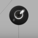

Blocks That Matter
Dieser Artikel wurde für die folgenden Ubuntu-Versionen getestet:
Ubuntu 14.04 Trusty Tahr
Zum Verständnis dieses Artikels sind folgende Seiten hilfreich:
Blocks That Matter  (BTM) ist ein kommerzielles Spiel in dem man den winzigen Roboter Tetrobot steuert. Mit diesem kann man Blöcke durchbohren, diese aufsammeln und weiterverarbeiten. Verschiedene Materialien, wie z.B. Sand, Holz, Stein und Eisen, stehen dem Spieler mit dem jeweiligen spezifischen Verhalten zur Verfügung um das Rätsel zu lösen...
(BTM) ist ein kommerzielles Spiel in dem man den winzigen Roboter Tetrobot steuert. Mit diesem kann man Blöcke durchbohren, diese aufsammeln und weiterverarbeiten. Verschiedene Materialien, wie z.B. Sand, Holz, Stein und Eisen, stehen dem Spieler mit dem jeweiligen spezifischen Verhalten zur Verfügung um das Rätsel zu lösen...
Das Spiel kann mit einem Controller gesteuert werden.
| Hauptmenü | Spielszene |
Installation¶
Für das Spiel werden die Pakete
libopenal1 (universe)
liblwjgl-java (universe)
 mit apturl
mit apturl
Paketliste zum Kopieren:
sudo apt-get install libopenal1 liblwjgl-java
sudo aptitude install libopenal1 liblwjgl-java
benötigt [6].
Archiv¶
Von der Internetseite, wo das Spiel erworben wurde, das Archiv (z.B. BlocksThatMatter.XY.tar.gz) herunterladen und anschließend nach ~/Spiele/BTM entpacken [2]. In das Verzeichnis wechseln und das Spiel über den Befehl ./BTM starten [3]. Auf Wunsch kann ein Menüeintrag [4] vorgenommen werden.
Desura¶
Nachdem man das Spiel über die Internetseite oder den Client erworben hat kann das Spiel installiert [5] und über diesen gestartet werden.
The Humble Voxatron Debut¶
Das Spiel aus der Aktion The Humble Vexatron Debut als .deb-Paket herunterladen und installieren [1]. Nach erfolgreicher Installation ist das Spiel über "Spiele -> Blocks That Matter" zu finden.
Bedienung¶
Die Steuerung kann wahlweise mit der Tastatur oder einem Controller erfolgen.
| Menü | |
| Menüpunkt | Beschreibung |
| "Adventure Mode" | Start des Spiels. |
| "Community" | Spielen ("Play") von Leveln aus der Community. Über "Create" können eigene Level erstellt und der Gemeinschaft zugänglich gemacht werden. |
| "Option" | Spielrelevante Grundeinstellungen vornehmen u.a. Konfiguration des Controllers. |
Nach dem ersten Start wird im Homeverzeichnis der Ordner BlocksThatMatterUserDatas angelegt.
Dieser beinhaltet die Unterordner:
| Spieledaten | |
| Ordner | Beschreibung |
| Blocks That Matter Save | Spielstände |
| Community | Speicherort für Zusatzlevel. Level können heruntergeladen (.btm-Datei) oder im Unterordner CommunityLevels gespeichert werden. Unter MyWorkspace werden die im Editor erstellten Level abgespeichert. Level, welche der Community bereitgestellt worden sind und sich immer noch in diesem Ordner befinden können so Updates und Modifikationen erfahren. |
| config | Spieleinstellungen werden hier gespeichert. |
| Editor |
Demo¶
gameolith¶
Von gameolith.com  kann das Demo wahlweise als Archiv oder .deb-Paket heruntergeladen werden. Die Installation entspricht der Vollversion.
kann das Demo wahlweise als Archiv oder .deb-Paket heruntergeladen werden. Die Installation entspricht der Vollversion.

Problemlösungen¶
Infobox¶
| Blocks That Matter | |
| Originaltitel: | Blocks That Matter |
| Genre: | Puzzle |
| Sprache: |  |
| Veröffentlichung: | 2011 |
| Publisher: | Swing Swing Submarine |
| Systemvoraussetzungen: | mind. Intel-Core-2-Prozessor / 1GB RAM / 128MB+ Grafikkarte (OpenGL) / 250 MB Festplattenspeicher |
| Medien: | Download |
| Strichcode / EAN / GTIN: | - |
| Läuft mit: | Java / nativ |

- Erstellt mit Inyoka
-
 2004 – 2017 ubuntuusers.de • Einige Rechte vorbehalten
2004 – 2017 ubuntuusers.de • Einige Rechte vorbehalten
Lizenz • Kontakt • Datenschutz • Impressum • Serverstatus -
Serverhousing gespendet von